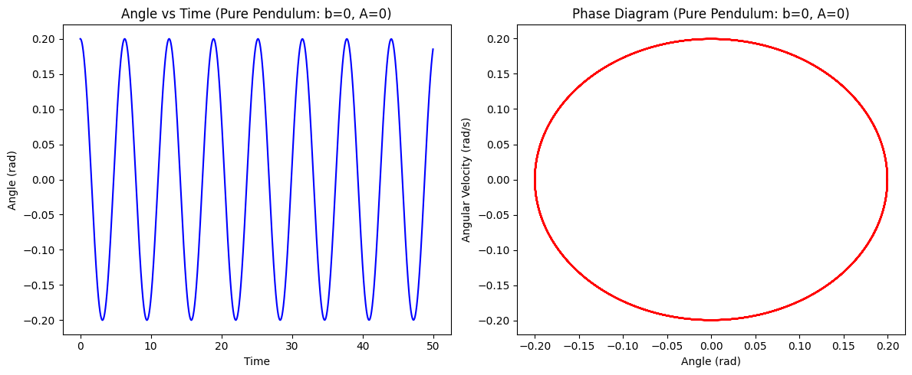
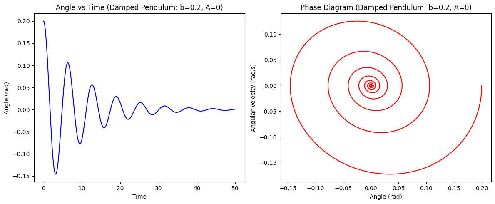
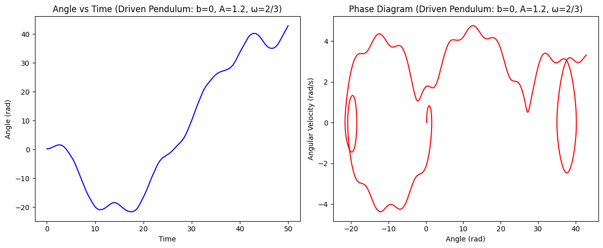
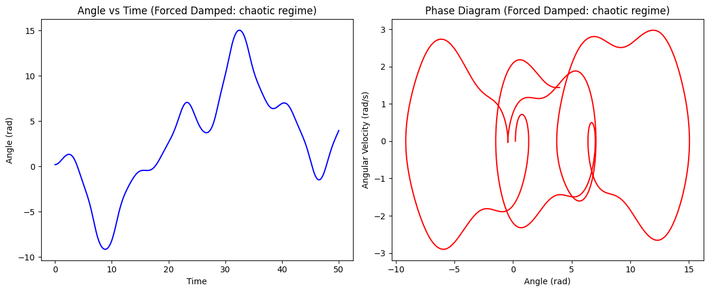
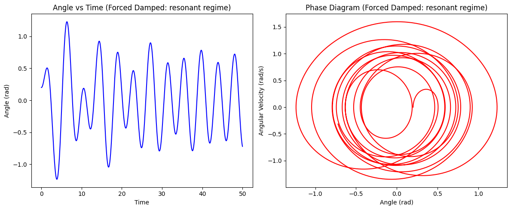

Problem 2
Theoretical Foundation — Forced Damped Pendulum
1. Governing Differential Equation
The motion of a forced damped pendulum is described by the nonlinear differential equation:
Where: - \(\theta(t)\): Angular displacement - \(\gamma\): Damping coefficient - \(\omega_0 = \sqrt{\frac{g}{L}}\): Natural frequency of the undamped pendulum - \(A\): Amplitude of the external periodic force - \(\omega\): Driving frequency
2. Small-Angle Approximation
For small angles (\(\theta \ll 1\)), we use the approximation:
This linearizes the equation:
This is the standard form of a driven damped harmonic oscillator.
3. Approximate Steady-State Solution
Assume a steady-state solution of the form:
Substituting into the linearized equation gives the amplitude:
And the phase lag:
4. Resonance and Energy Implications
Resonance Condition
Resonance occurs when the response amplitude is maximized:
- For weak damping (\(\gamma \ll \omega_0\)), \(\omega_{\text{res}} \approx \omega_0\)
- At resonance, the system absorbs energy most efficiently from the driving force
Energy Considerations
The average energy stored in the pendulum is proportional to:
- Maximum energy occurs near the resonance frequency
- Damping prevents runaway energy growth and stabilizes the system
- Real-world implications include energy harvesting, vibration isolation, and mechanical failure under resonance (e.g., Tacoma Narrows Bridge collapse)
Analysis of Dynamics — Forced Damped Pendulum
1. Influence of System Parameters
The dynamics of the forced damped pendulum are highly sensitive to three key parameters:
- \(\gamma\) (Damping coefficient)
- \(A\) (Driving amplitude)
- \(\omega\) (Driving frequency)
a. Damping Coefficient (\(\gamma\))
- Low damping (\(\gamma \ll 1\)):
- Oscillations persist longer; energy loss is minimal.
- System is more prone to resonance and chaos under certain conditions.
- High damping (\(\gamma \gg 1\)):
- Motion is overdamped; the pendulum returns slowly to equilibrium.
- Driving force must be strong to sustain oscillations.
b. Driving Amplitude (\(A\))
- Small \(A\):
- Pendulum exhibits regular, periodic motion.
- The system behaves like a linear oscillator under the small-angle approximation.
- Moderate to large \(A\):
- Nonlinear effects become significant.
- System may enter quasiperiodic or chaotic regimes.
- The energy injected can overcome damping and gravity, leading to complex or erratic motion.
c. Driving Frequency (\(\omega\))
- Low \(\omega\):
- The pendulum responds slowly, often staying synchronized with the driving force.
- At resonance (\(\omega \approx \omega_0\)):
- Maximum energy transfer; large-amplitude oscillations.
- System is particularly sensitive to small changes in parameters.
- High \(\omega\):
- The pendulum may fail to follow the rapid oscillations, leading to phase lag or erratic motion.
2. Transition Between Regular and Chaotic Motion
The forced damped pendulum is a canonical example of how a deterministic system can exhibit chaos.
a. Regular Motion
- Occurs at small \(A\), near \(\omega \approx \omega_0\), and moderate \(\gamma\).
- Periodic or quasiperiodic motion is observed.
- The pendulum's motion can be described by simple harmonic components.
- In phase-space (e.g., \(\theta\) vs. \(\dot{\theta}\)), the trajectory forms closed loops or toroidal structures.
b. Chaotic Motion
- Emerges at high \(A\), low \(\gamma\), and carefully tuned \(\omega\).
- Motion becomes highly sensitive to initial conditions — small changes grow exponentially over time.
- No long-term predictability; however, the system is still deterministic.
- In phase-space, the trajectory fills a strange attractor, showing fractal-like structure.
c. Indicators of Chaos
- Lyapunov Exponents: Positive values indicate sensitivity to initial conditions.
- Poincaré Sections: Discrete points plotted at regular time intervals can show transition from order (points on closed curves) to chaos (scattered points).
- Bifurcation Diagrams: Illustrate how changing \(A\) or \(\omega\) leads from periodic to chaotic regimes via period-doubling.
3. Physical Interpretations
- Engineering: Understanding chaotic motion is crucial for avoiding unpredictable failure in structures under periodic stress.
- Climatology: Forced nonlinear systems like this mirror chaotic behavior in weather models.
- Control Systems: Avoiding or harnessing chaos has applications in robotics and stabilization methods.
Practical Applications — Forced Damped Pendulum
The forced damped pendulum serves as a foundational model for many real-world systems where nonlinear dynamics, external forcing, and damping are key elements. Below are several significant applications:
1. Energy Harvesting Devices
Vibration-Based Energy Harvesters
- Concept: Devices use ambient mechanical vibrations (e.g., from foot traffic, machinery, or vehicles) to drive a damped oscillator, converting mechanical energy into electrical energy.
- Pendulum Role: The oscillator behaves like a forced damped pendulum, with external vibrations as the periodic driving force.
- Design Insights:
- Resonance is exploited to maximize power output.
- Nonlinear designs can broaden frequency response, allowing energy capture from a wider range of sources.
Example:
- Piezoelectric harvesters tuned to human walking frequencies.
- Pendulum-based ocean wave energy converters.
2. Suspension Bridges and Mechanical Structures
Structural Oscillations
- Suspension bridges, like the Tacoma Narrows Bridge, can be modeled as damped driven systems.
- Wind acts as a periodic driving force.
- If resonance occurs (driving frequency near natural frequency), amplitudes grow dangerously.
Pendulum Analogy:
- The bridge's oscillation is analogous to a pendulum with:
- External driving (wind),
- Damping (structural friction, air resistance),
- A restoring force (gravity/structural stiffness).
Design Relevance:
- Engineers use insights from forced damped pendulum dynamics to design tuned mass dampers and other control systems to prevent catastrophic resonance.
3. Oscillating Electrical Circuits (RLC Circuits)
Analogous System
- Series RLC circuits (Resistor–Inductor–Capacitor) under an AC voltage source follow the same differential equation as a forced damped pendulum:
$$ L\frac{d^2q}{dt^2} + R\frac{dq}{dt} + \frac{1}{C}q = V_0 \cos(\omega t) $$
- Here:
- \(q\): Electric charge (analogous to \(\theta\)),
- \(R\): Damping (resistance),
- \(L\): Inertia (inductance),
- \(1/C\): Restoring force (capacitance),
- \(V_0 \cos(\omega t)\): External driving force.
Applications:
- Radio tuners, where adjusting the resonance frequency isolates a desired signal.
- Power electronics, where understanding transient and steady-state behaviors is critical.
4. Clocks, Robotics, and Control Systems
- Pendulum clocks are direct examples, though typically without external forcing.
- In robotics, limbs and joints can behave like driven pendulums under control inputs.
- Feedback control systems exploit the understanding of oscillatory behaviors for stabilization and motion planning.
5. Climate and Geophysical Systems
- Climate models often exhibit quasiperiodic and chaotic dynamics similar to a driven damped pendulum.
- Ocean tides, El Niño oscillations, and atmospheric patterns sometimes follow periodic or chaotic regimes due to nonlinear interactions and periodic solar forcing.
Summary
| Domain | Real-World Example | Pendulum Analogy |
|---|---|---|
| Energy Harvesting | Piezoelectric floor tiles | Periodic driving from human steps |
| Civil Engineering | Suspension bridges, skyscrapers | Resonance from wind or seismic activity |
| Electrical Engineering | RLC circuits, signal filters | Direct mathematical analog |
| Robotics/Control | Joint actuators, balancing robots | Actuated oscillators with feedback |
| Earth/Climate Science | ENSO, tidal forcing, atmospheric oscillations | Periodic forcing in nonlinear systems |
Implementation — Forced Damped Pendulum
In this task, we will create a computational model to simulate the motion of a forced damped pendulum, visualize its behavior under various conditions, and plot phase diagrams and Poincaré sections to illustrate transitions to chaos.
1. Model Setup
We simulate the dimensionless form of the forced damped pendulum:
Where: - \(\theta(t)\) is the angular displacement. - \(\gamma\) is the damping coefficient. - \(\omega\) is the driving frequency. - \(A\) is the amplitude of the external periodic force.
We solve this numerically using the Runge-Kutta method to integrate the system over time.
2. Key Steps in the Implementation
a. Numerical Simulation
We will use the Runge-Kutta method to solve the system of second-order differential equations. This method provides an accurate approximation for the motion of the pendulum.
b. Visualization
- Time evolution: Plot \(\theta(t)\) and \(\dot{\theta}(t)\) as functions of time.
- Phase space diagram: Plot \(\theta\) vs. \(\dot{\theta}\) to visualize the system’s dynamics.
- Poincaré sections: These will help detect chaotic behavior by plotting a discrete set of points at regular intervals of the driving force period.
Pure Pendulum (No Damping, No Forcing)
Regular periodic motion (simple harmonic for small angles).
Closed loop in the phase diagram.

Damped Pendulum (Damping, No Forcing)
Oscillations gradually decay to equilibrium.
Spiral trajectory in the phase diagram.

Driven Pendulum (Forcing, No Damping)
Energy input keeps the system in sustained oscillation.
Rich structure in phase space; potential for complexity depending on parameters.

Forced Damped Pendulum (Chaotic Regime):
Aperiodic, sensitive to initial conditions.
Complex, non-repeating trajectory in phase space.

Forced Damped Pendulum (Resonant Regime):
Large amplitude, synchronized with driving force.
Regular phase diagram, possibly with stable limit cycles.
